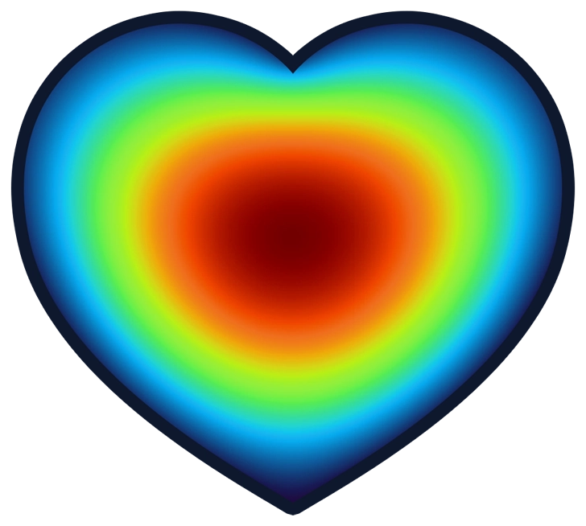

Higher-order competition and spatial pattern diversity
Individual-based and PDE simulations, analysis scripts and figure material for Higher-order competition as a minimal mechanism for spatial pattern diversity in population dynamics.
Theoretical physicist
Nonlinear dynamics · Pattern formation · Complex systems
I study how interactions and broken symmetries shape collective dynamics in spatially extended systems.
I am a postdoctoral researcher in the Dynamics of Complex Living Systems group at CASUS-HZDR in Görlitz, Germany. I combine mathematical modelling, analytical methods and numerical simulations, with dryland vegetation as a principal application.
Populations & landscapes
From individual competition to collective spatial order. Explore how interactions, heterogeneity and transport shape populations and their resilience.
Explore the live modelsEach dot represents an individual. As higher-order competition increases, the population reorganises into spots, stripes and gaps. The legend above follows the interaction strength bγ.
Illustrative simulation · 1 min 18 s
Individuals reproduce, disperse and compete. As the competition kernel becomes sharper, irregular aggregates give way to clusters with local hexagonal order. The slider follows the competition-kernel exponent p, from 0.1 to 16.
Individual-based simulation · 1 min 12 s
Explore the equations

Powered by VisualPDEPreparing the simulation…
To explore the live models locally, serve this folder over HTTP. See the local preview instructions.
Waves, fluctuations & defects
Broken reciprocity sets waves in motion. Fluctuations sustain new structures. Follow the formation of travelling pulses, moving phase walls and vortices.
Explore the equations
Preparing the simulation…
To explore the live models locally, serve this folder over HTTP. See the local preview instructions.
Research
My aim is to connect individual mechanisms, macroscopic models and measurable patterns. I am particularly interested in how landscape heterogeneity and nonreciprocal interactions change stability, persistence and collapse.
Understand how directional interactions and heterogeneous environments change pattern stability and transitions in nonlinear systems.
Derive continuum models from stochastic individual-level dynamics and test where these approximations capture collective behaviour.
Use vegetation cover and elevation data to distinguish competing mechanisms and test predictions in real landscapes.
Code & publications
Here I share the simulation and analysis code behind my papers, alongside the corresponding publications and archived releases.
Individual-based and PDE simulations, analysis scripts and figure material for Higher-order competition as a minimal mechanism for spatial pattern diversity in population dynamics.
Find me
Visitors